로그인부터 결재선까지,
버튼 한 번에 통과
아침마다 누르던 인증서 로그인, 매번 같은 시간외근무·조퇴 신청, 엑셀에서 옮겨 적던 과세특까지. 쌤패스가 대신 눌러 두고, 마지막 확인만 선생님이 해요.
평소클릭 0번
- 1업무포털 접속
- 2인증서 로그인 버튼
- 3인증서 고르기
- 4비밀번호 입력 · 확인
- 5나이스 메뉴
- 6복무 › 개인근무상황관리
- 7[신청]
- 8근무상황 · 시각 · 사유
- 9[승인요청]
- 10[개인결재선] 고르기 · [지정]
쌤패스클릭 1번
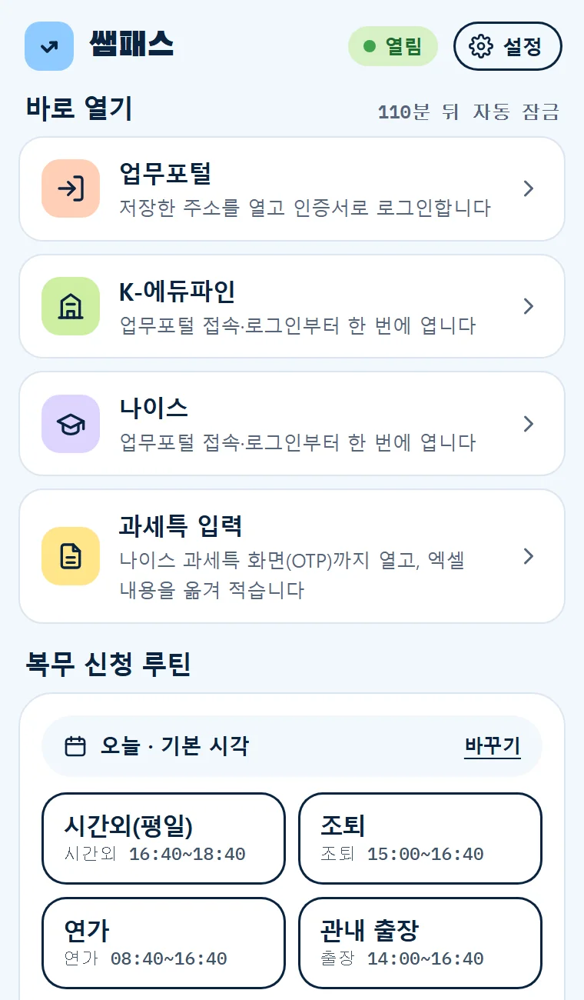
매일 하던 클릭,
쌤패스가 먼저 해 둘게요
모두 선생님 브라우저 안에서, 선생님이 보는 앞에서 동작해요. 아래 화면은 실제 프로그램 화면입니다. (이름·내용은 예시)
PIN 한 번이면
업무포털 로그인 끝
인증서 비밀번호는 이 PC에만 암호화해 두고, 아침에 PIN으로 잠금을 풀면 [업무포털 로그인] 한 번으로 인증서 로그인까지 해요.
- 업무포털 창이 없으면 주소부터 열어 줘요
- "업무포털을 열면 자동 로그인"을 켜면 열기만 해도 로그인
- 비밀번호가 틀리면 다시 시도하지 않고 멈춰요 (인증서 잠김 방지)
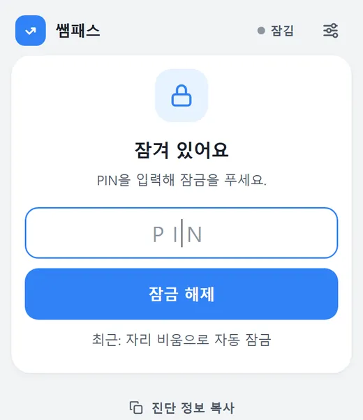
"로그인 → 나이스 → 조퇴"
순서를 묶어 버튼 하나로
자주 하는 순서를 루틴으로 저장해 두면 팝업 맨 위 버튼 하나로 이어서 실행해요. 바탕화면 아이콘으로 만들면 브라우저를 켜지 않은 상태에서도 더블클릭 한 번.
- 순서: 로그인만 / → K-에듀파인 / → 나이스 / → 나이스 → 복무 신청
- 이미 로그인돼 있거나 나이스가 열려 있으면 그 단계는 건너뛰어요
- 복무 신청이 들어간 루틴도 [상신] 앞에서 멈춰요
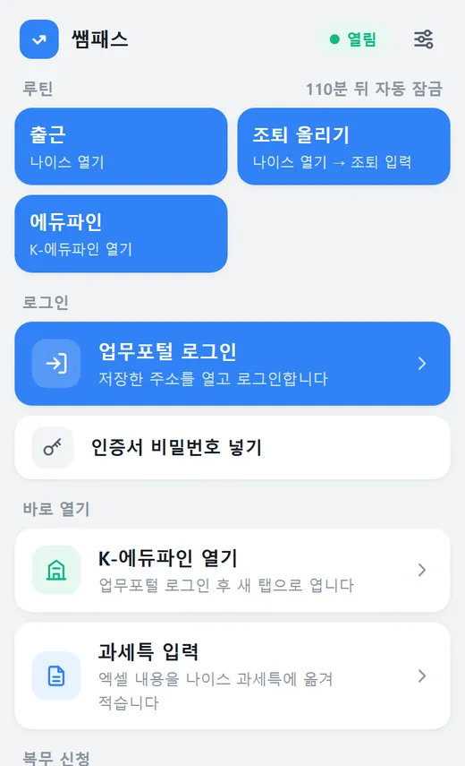
시간외근무 · 조퇴,
결재선까지 채워 둘게요
시각·사유·개인결재선을 버튼에 저장해 두면 날짜만 골라 나이스 신청 창과 결재선 지정까지 채워요. 내용을 보고 [상신]은 직접 눌러요.
- 시간외근무 · 조퇴 · 외출 · 지각 · 병조퇴 등
- 그날만 다른 시각은 팝업에서 바로 바꾸기
- Alt+Shift+1처럼 단축키로도 실행
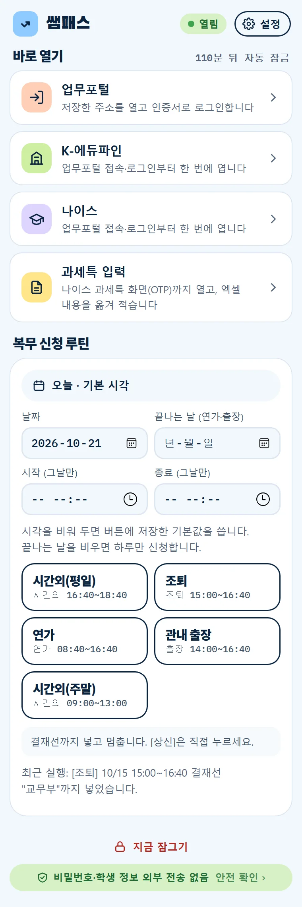
쓰던 엑셀 그대로,
과세특 칸에 옮겨 적어요
엑셀 양식이 달라도 학년·반·번호·이름·내용 열을 스스로 찾아요. 나이스에서 강의실을 조회하면 명단을 맞추고, 맞는 학생만 넣어요.
- 반 · 번호 · 이름이 모두 맞아야 입력 (한 줄 밀림 방지)
- 학생별 남은 바이트 · 이모지 · 이미 쓴 내용 미리 검사
- OTP와 [저장]은 직접, 저장되면 다음 강의실로 이어서
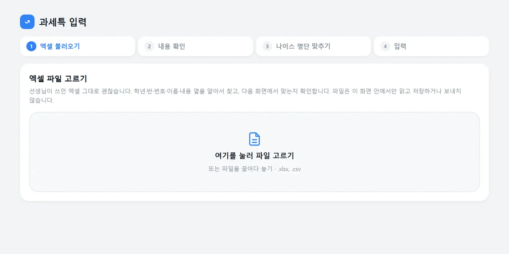
편한 만큼,
잠금은 꼼꼼하게
비밀번호는 PIN과 Windows 계정 보호로 이중 암호화해요. 잠금 방식은 직접 고를 수 있어요.
- 기본: 자리를 비운 시간·최대 유지 시간이 지나면 잠금
- 선택: PC 화면을 잠글 때(Win+L)만 잠금 — 동의 후 켜기
- PIN 5번 틀리면 잠시 입력 차단
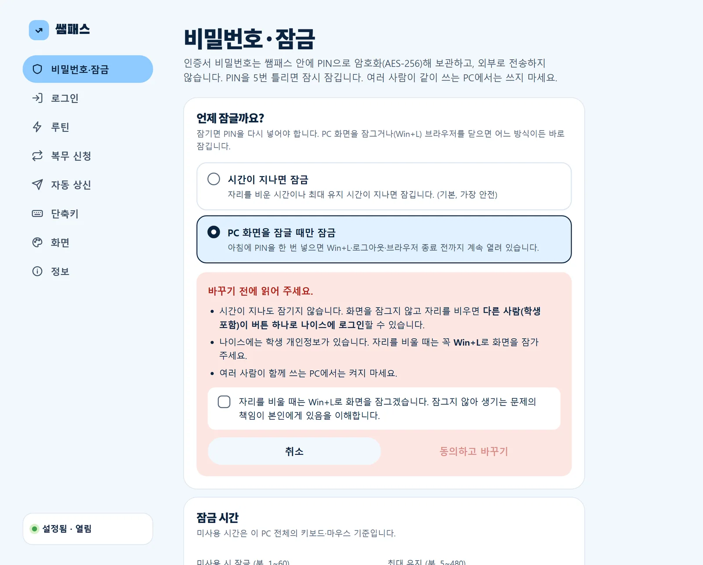
사용 설명서
툴바의 쌤패스 아이콘(또는 Alt+Shift+N) → 오른쪽 위 설정 아이콘을 누르면 설정 화면이 열려요.
처음 설정: 비밀번호와 PIN
- 설정 › 비밀번호·잠금에서 인증서 비밀번호를 두 번 넣어요.
- 잠금을 풀 때 쓸 PIN(숫자 6~12자리)을 정해요.
- [저장]하고 툴바 아이콘에서 PIN으로 잠금을 풀면 준비 끝.
- "언제 잠글까요?"에서 잠금 방식을 고를 수 있어요.
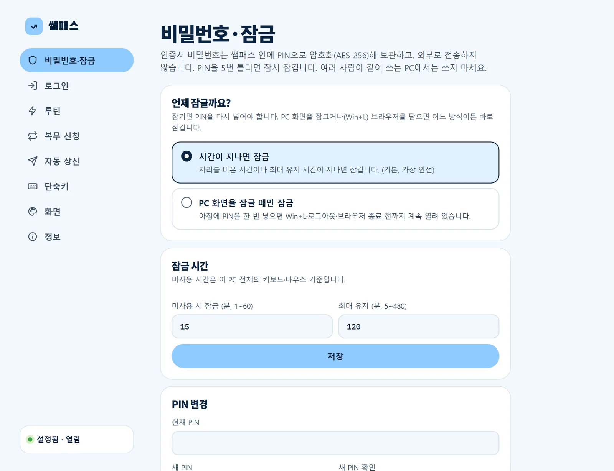
업무포털 로그인
- 팝업의 [업무포털 로그인]을 누르면 업무포털을 열고 인증서 로그인까지 해요.
- 설정 › 로그인의 스위치를 켜면 업무포털을 열기만 해도 로그인해요.
- 다른 시도교육청은 업무포털 주소를 바꿔 주세요.
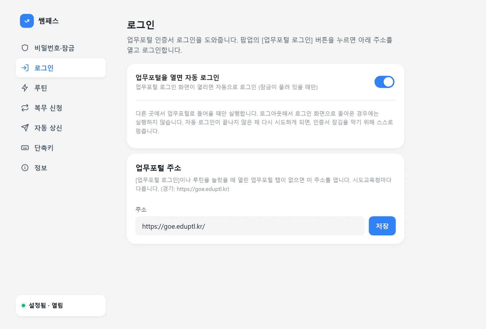
루틴 만들기
- 설정 › 루틴 › [+ 루틴 추가]
- 이름(예: 출근)과 순서를 고르고 [저장]
- 팝업 맨 위에 버튼이 생겨요.
- [바탕화면에 바로가기 만들기]로 바탕화면 아이콘을 만들 수 있어요. 더블클릭하면 PIN을 물은 뒤 실행해요.
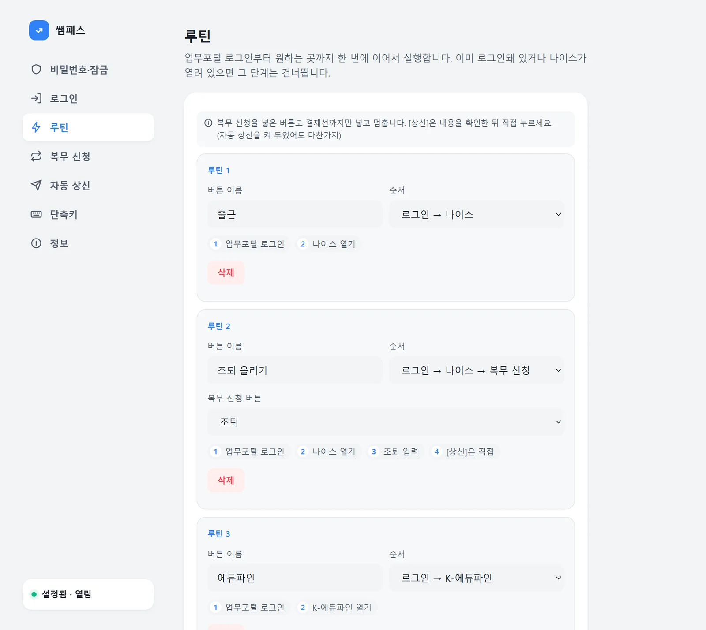
복무 신청 버튼
- 나이스 ⚙개인설정 › 업무승인자관리 › 개인결재선관리에서 결재선을 먼저 만들어요.
- 설정 › 복무 신청 › [+ 버튼 추가]: 종류 · 시각 · 사유 · 결재선 이름
- 나이스를 연 상태에서 팝업의 버튼을 누르면 결재선 지정까지 채워요.
- 나이스 화면에서 확인하고 [상신]은 직접.
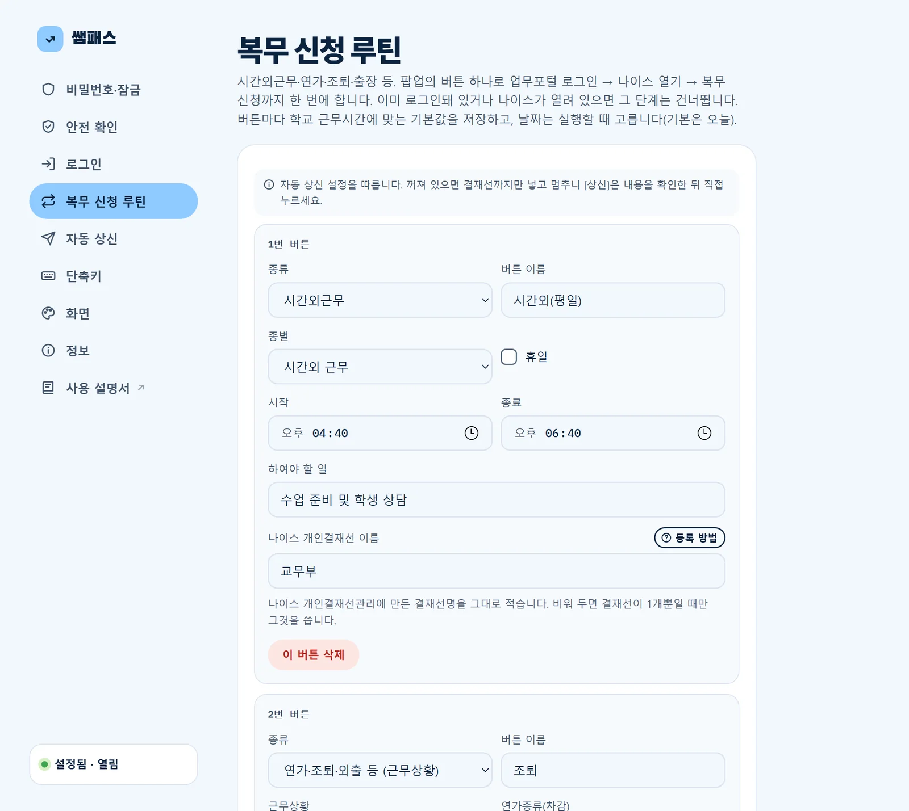
과세특 엑셀 입력
- 팝업 › 바로 열기 › [과세특 입력] → 엑셀을 끌어다 놓기
- "이렇게 이해했어요"에서 열이 맞는지 확인 (틀리면 바꾸기)
- 나이스 › 과목별세부능력및특기사항에서 OTP 입력 후 강의실 [조회]
- 맞추기 표를 보고 [입력 시작] — 이미 내용이 있는 학생은 체크해야 바꿔요
- 나이스에서 확인 후 [저장] → 다음 강의실을 조회하면 이어서
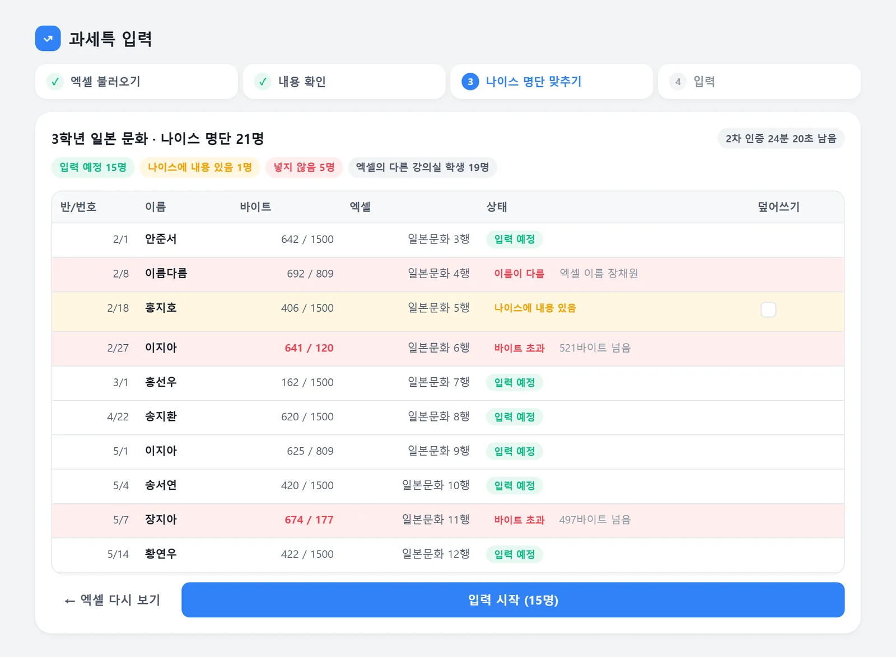
자동 상신 (선택)
- 기본은 꺼짐 — 결재선까지 넣고 멈춰요.
- 켜려면 수당·책임 안내를 읽고 동의해야 해요.
- 루틴에서는 이 설정과 상관없이 항상 [상신] 앞에서 멈춰요.
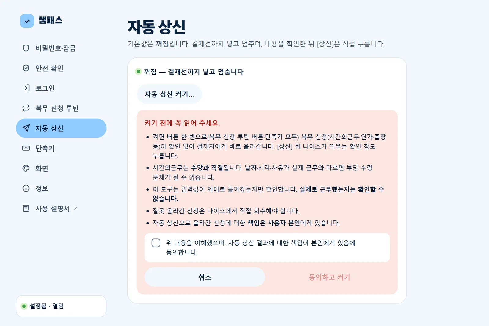
단축키
- Alt+Shift+N 팝업 열기
- Alt+Shift+L 업무포털 로그인
- Alt+Shift+1~2 복무 신청 1·2번 (오늘 날짜)
- [단축키 바꾸기]에서 3~6번 · K-에듀파인도 지정할 수 있어요.
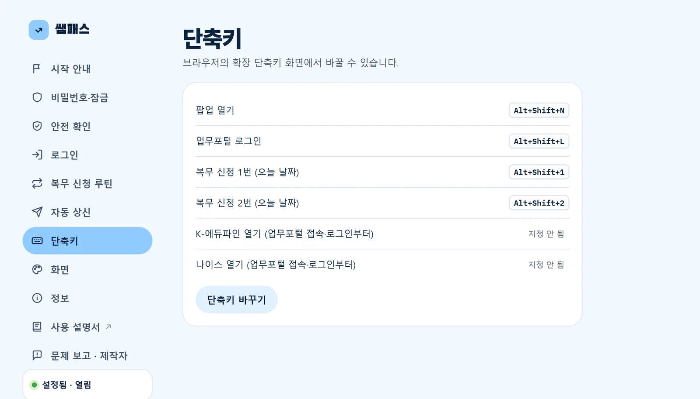
정보 · 업데이트
- 새 버전은 브라우저를 켤 때와 몇 시간마다 확인해요.
- 잠겨 있고 쓰는 중이 아닐 때 자동으로 설치 — 끄면 알림만 받아요.
- [지금 확인]으로 바로 확인할 수도 있어요.
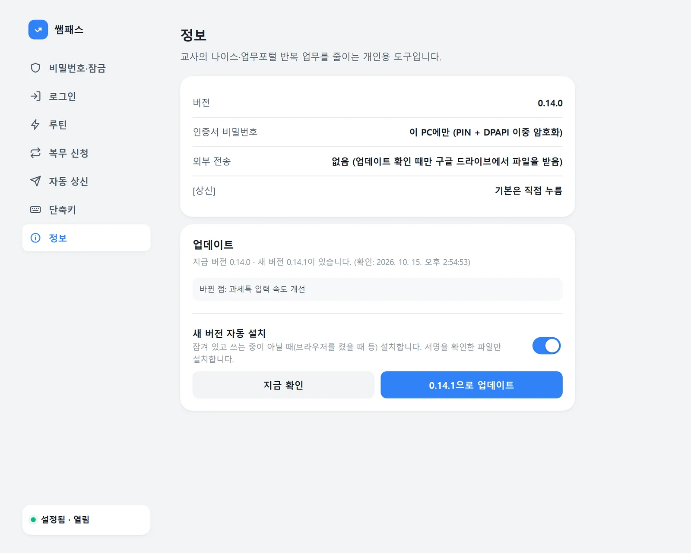
4단계면 바로 시작
관리자 권한 없이 설치돼요. 처음 한 번만 하면 업데이트는 자동이에요.
설치 파일 실행
받은 파일을 두 번 클릭해요. 끝나면 안내 페이지가 열리고 확장 폴더 경로가 자동으로 복사돼요.
개인이 만든 새 프로그램이라 뜨는 안내예요. 추가 정보 → 실행을 누르면 돼요.
Windows의 PC 보호
Microsoft Defender SmartScreen에서 인식할 수 없는 앱의 시작을 차단했습니다.
추가 정보게시자: 알 수 없는 게시자
브라우저에 확장 등록 처음 한 번
- 주소창에
edge://extensions(크롬chrome://extensions) - 개발자 모드 켜기
- 압축 풀린 확장 로드 → 주소칸에 Ctrl+V → [폴더 선택]
웹스토어 밖 프로그램이라 나오는 안내예요. [닫기]를 누르면 돼요.
ID: ljkfool…
비밀번호 · PIN 저장
툴바의 퍼즐 아이콘에서 쌤패스를 고정(📌)하고, 아이콘 → 설정 › 비밀번호·잠금에서 인증서 비밀번호와 PIN을 저장하면 끝.
다른 시도교육청이면 설정 › 로그인에서 업무포털 주소를 바꿔요.
선생님 정보는
선생님 PC에만
자주 묻는 질문
교육청에서 만든 공식 프로그램인가요?
인증서 비밀번호를 저장해도 안전한가요?
[상신]까지 자동으로 할 수는 없나요?
백신이나 브라우저에서 경고가 떠요.
확장 등록을 꼭 직접 해야 하나요?
다른 시도교육청에서도 되나요?
○○.eduptl.kr 형태라면 설정 › 로그인에서 주소만 바꾸면 돼요. 처음 만든 곳은 경기도라, 다른 지역은 화면이 조금 달라 일부 기능이 다를 수 있어요.엑셀 양식이 사람마다 다른데 괜찮나요?
업데이트는 어떻게 하나요?
맥(Mac)이나 휴대폰에서도 쓸 수 있나요?
지우고 싶어요.
%LOCALAPPDATA%\NeisHelper\NeisHelperSetup.exe /uninstall을 넣고 Enter → 브라우저 확장 관리 화면에서 쌤패스 [제거]. 저장된 비밀번호까지 지우려면 먼저 설정의 [저장된 비밀번호 지우기]를 눌러 주세요.정말 무료인가요?
업데이트 기록
불러오는 중…